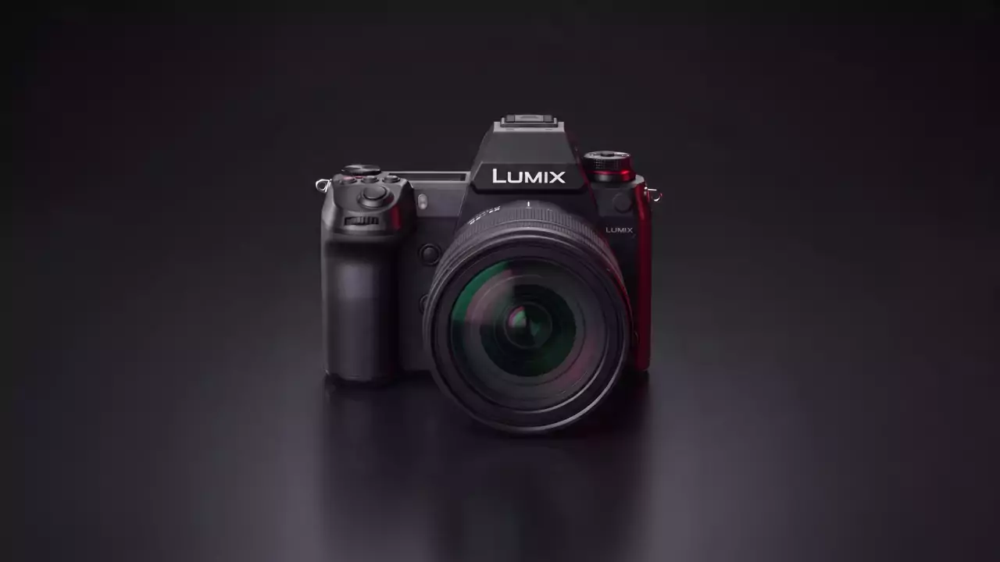
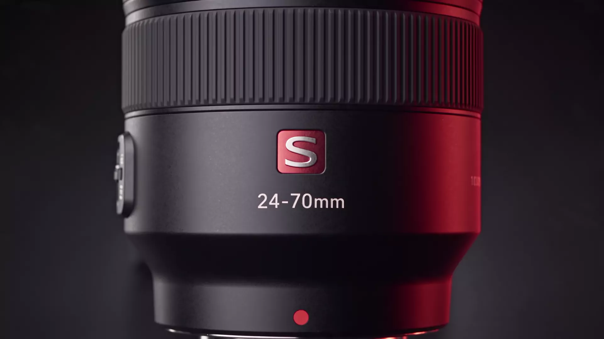

Full-frame L-Mount · 6K open gate
Grave uma vez, publique em todo formato
Sensor de 24,2 MP, V-Log de 14+ stops e ProRes RAW interno, no corpo selado da linha S1.
Pronta para gravar
6K open gate a 30p com 4:2:2 10-bit interno. ProRes RAW e RAW HQ gravam direto no CFexpress Type B, sem gravador externo.
A cor decidida antes da edição
Grave em V-Log com mais de 14 stops de faixa dinâmica, ou aplique o look direto no arquivo com o Real Time LUT e aprove a cor ainda no set.
Um sensor que serve aos dois ofícios
BSI de 24,2 MP com estabilização de até 8 stops no corpo. Para a foto que pede mais, o modo de alta resolução compõe 96 MP com a câmera na mão.
S PRO 24-70mm f/2.8
A zoom padrão certificada pela Leica: abertura constante em toda a faixa, foco duplo de 480 fps e vedação no mesmo padrão do corpo.
Disponível na Amazon
Filme com o quadro inteiro
Corpo DC-S1M2E ou kit com lente L-Mount. Preço atual e prazo de entrega na página do produto.
Open gate
O quadro 3:2 inteiro é seu
A S1 IIE grava a área completa do sensor em 6K 30p. O recorte para cada plataforma acontece depois, na edição. Toque nos formatos e veja quanto quadro sobra para reenquadrar.

A lente do kit em números
Ficha da S PRO 24-70mm f/2.8, a zoom padrão da linha S PRO que aparece no filme acima.
- Construção
- 18 elementos em 16 grupos
- Diafragma
- Circular de 11 lâminas
- Foco mínimo
- 0,37 m · ampliação 0,25x
- Filtro
- 82 mm
- Peso
- 935 g
- Vedação
- Poeira e respingos
Especificações
Ficha técnica da S1 IIE (DC-S1M2E), corpo, em três blocos.
Sensor e foto
- Sensor
- Full-frame 24,2 MP BSI CMOS
- ISO
- 100 a 51.200, exp. 50 a 204.800
- Estabilização
- 5 eixos, até 8,0 stops
- Rajada
- 10 fps mecânico, 30 fps eletrônico
- Alta resolução
- 96 MP com a câmera na mão
Vídeo
- Open gate
- 6K 30p na área 3:2 inteira
- Cinemascope
- 2.4:1 até 60p sem crop
- RAW interno
- ProRes RAW até 5.8K 30p
- Cor
- V-Log 14+ stops, Real Time LUT
- Amostragem
- 4:2:2 10-bit interno
Corpo e conexão
- Construção
- Liga de magnésio selada
- EVF
- OLED 5,76 M pontos, 0,78x
- LCD
- 3", articulado, touch
- Cartões
- CFexpress B + SD UHS-II
- Peso
- 795 g com bateria e cartão
Valores informados pelo fabricante. Preço e disponibilidade na página do produto.
Envio internacional
A Amazon entrega no Brasil com prazo e custo calculados no checkout.
Devolução
Política de devolução da Amazon, nos prazos e condições da loja.
Garantia Panasonic
Suporte oficial do fabricante para defeitos de fábrica.